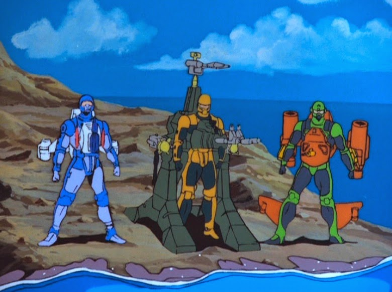

This is a website dedicated to the best part of the 80's. The cartoons! What makes this page different than all the other 80's cartoon pages? you may ask. Simple, I don't just say what cartoons were awesome, I go over all
aspects of them, including the history, the music and opening themes (most modern cartoons do not have an opening theme song anymore)and the voice acting in order to give a comprehensive evaluation of the best of. Of note
I tried to find the best videos I could, but some would not link. If you are seeing some of them for the first time, but the quality is poor, I encourage you to scour the internet for the best one you can find.
Transformers
The Transformers is one of the most well known 80's cartoons and arguably the best. It's about two groups of robots from the planet Cybertron that have been fighting a war for untold centuries. Thier mechanical planet is running out
of energy and in an attempt to find a new source they travel to Earth where their ship crashes. They awaken several thousand years later in modern times where their battle continues. The idea for
the cartoon came about when a Hasbro executive was travleing to Japan. He saw the transfermer toys on the shelf and had the idea to buy the rights and make a cartoon out of them to promote sales.
Initially there was no good or bad and no backstory. It was all created after Hasbro purchased the rights. They decided to keep it simple. Anything that was a car was on one team, anything that
was a jet would be on the other. It used the voice talents of Peter Cullen who voiced Optimus Prime and Ironhide. His voice was so iconic that when the live action movies were made they brought him back in to voice those as well. He is also known for voicing Eeyore in Winnie the Pooh. Frank Welker did multiple voices including Megatron and Soundwave. He is one of the
most famous voice actors of all time, having done voices in practially every cartoon since the 70's and has almost 900 acting credits to his name. Also included was Casey Kasem as Cliffjumper, he is most famous as the voice of
Shaggy from Scooby-doo (where he worked alongside Frank Welker who voiced Freddy), Christopher Collins as Starscream and the late Scatman Crothers as Jazz. When referencing this series it is commonly called Generation One or G1.
Several live action movies would later be made based off of this show. As well as many attempts to redo teh series, none of them having the same success or fan base.
This is the opening theme for season one. Each season of the Transformers had a new opening/closing theme. This is very basic, but gets the point accross.
The season two theme ups the ante on the music, adding more of an 80's vibe and improved visuals
Season three comes after the release of The Transformers:The Movie. Again it beefs up the music score, including a constant "ump-bah" vocal to emphasise the beat. The visuals are completely redone in response to many of
season one/two transformers haveing been killed off in the movie, instead showcasing the new cast. According to Hasbro executives this was done for marketing. The thought was they were getting rid of the old toy line and brining in the new one. It never dawned on them
that the deaths of everyone's favorite characters would draw such a huge negative backlash. They recieved countless leters from parents about how their child cried for days after watching the movie.
Season four is the final season of G1 Transformers. It only saw three episdoes before cancelation due to Sunbow losing its contract which they were unable to renew. The series was continued in Japan, but
was not done up to the same standards, often having confusing story lines. The theme is the same as season three, but with new visuals added featuring the new Headmasters and Targetmasters.
Optimus Prime (Greatest hero ever? Could be)MegatronStarscream (That co-worker who's constantly trying to take credit for everything)
G.I. Joe
Keeping with the standard theme of good versus evil, this cartoon features G.I. Joe, an elite special missions force, against Cobra, a terrorist organization. What made this show great is a
combination of memorable characters and high tech vehicles. The characters all had a unique ability or quirk, such as Lady J, who only used spears; Roadblock, who spoke in rhymes; Deep Six,
who always wore deep sea diving gear; and Snake Eyes,who never spoke. They were pitted against Destro, who wore a metal mask; Zartan, who could mimic anyone; and Cobra Commander, who never
showed his face. They also had some sweet equipment, starting out simple wtih F-14 and A-10 analogs to advanced heavily armed missile trucks. The show technically ran for two seasons with a feature
length film, however it was cancelled after the film when the productino license was lost to another company. The show returned three years later, picking up where it left off and ran for two more
years. As with the Transformers, this was mostly a 30 minute commercial for toys. It saw Peter Cullen and Frank Welker in more minor roles, along with Christopher Collins now in a lead role as Cobra
Comander. This cartoon also spawned several live action movies and reboots.
This is the original opening that ran for the first five episdoes.
After the first miniseries the show got a new intro with new animation and a slight change to the theme song, changing the words "against Cobra and Destro" to "against Cobra the enemy"
Starting with episode 11 the show recieved another into with the same lyrics, but new visuals
This intro was put together when the movie was being released. Which is why you see Sergeant Slaughter in it even though he hasn't been introduce yet.
After two seasons Hasbro released a feature film. It received an updated theme song with a heavier rock beat and longer narrative. As with Transformers this was done in order
to introduce new characters and toys to sell. It brought in Falcon, the brother of the Joe leader Duke, and Sergeant Slaughter, a character based off of and voiced by the professional wrestler.
In the initial script Duke is killed by Serpentor, but after the unforseen negative reaction they received after killing so many Transformers, the script was redone leaving Duke alive at the end.
After the movie was released Sunbow, who had been producing the episodes lost their license, which was picked up by DiC. After several years in cancelation the series was restarted
to include a new opening showing off all the awesome new toys that were coming out and, for the first time ever, a completely new theme song. It's much heavier and aggressive sounding.
Duke, everyone's favorite soldierSnake Eyes. 100% mute. 100% Bad A$$Cobra Commander, when narcissism and incompetence collide
SilverHawks
Silverhawks is a future based sci-fi show about the SilverHawks team battling the evil MonStar. This show takes place mostly in space due to the Silverhawks team of cyborgs possessing the ability
to fly and breathe in space. I know it violates many laws of physics, but screw that jerk Newton. Everyone in this show, including the villian, have awesome armor that gives them enhanced abilities
and durability and includes lasers in the shoulders, thrusters in the heels and wings (I know, no air in space means no wings needed, but again, screw Newton and screw Ludwig Prandtl too!).
They battle against the crime lord MonStar who rides around on a freaky space squid that cooperates with him as well as a cat with a personality disorder. Though not having a voice cast as famous
as some of the other shows, they do a great job, most of them also voicing characters in the Thundercats.
This is one of the greatest opening theme songs ever! Not only does it have a catchy tune, but it has a friggin guitar solo in the middle of it. It just goes to show how awesome
the 80's were.
The SilverHawks teamThe villian MonStarFreaky space squid
Thundercats
The Thundercats is about a group of refugees from a planet whose inhabitants evolved from various cats. Their homeworld of Thundera is dying and they must evacuate. They take with them
the young lord Lion-O (all the characters are named after the cat they most resemble) and flee to a new planet called Third Earth. Upon arrival they awaken from suspended animation to discover
Lion-O's pod failed and he is now a grown man, but has the mind of a young boy still. They soon learn that the planet is inhabitated by the personification of evil named Mumm-Ra, a mummy that
can briefly gain inscreased strength and power by praying to the spirits of evil. Lion-O is equiped with the incredible Sword of Omens, a dagger that can increase in size and send out a laser
pointer to the sky that sigles the other cats, like a portable bat signal. The team also includes Panthro, a nunchuck wielding engineer who builds a tank that would make Patton shed a tear;
Cheetara, a staff carrying lady who runs crazy fast; Tygra who has a magic whip that can turn him invisible; WilyKit and WilyKat, a pair of mischivous siblings who I can never tell apart; and Jaga,
the deceased mentor of Lion-O who shows up randomly to give advice Obi-Wan Kenobi style. Tacked on to this group is Snarf, a cat lizard who is the motherly nursmade for Lion-O. Just like a real
mom, he can't comprehend that his ward is an adult and keeps trying to make him nap and eat his peas. It was produced by the same company as SilverHawks, so it uses many of the same voice actors and directors.
A short reboot series was made in 2011.
This is another great into, created by Bernard Hoffer, the same dude that did the intro to SilverHawks. It has soem great 80's era metal guitar riffs.
Lion-O with his Sword of OmensMumm-Ra the Ever Living
Obi-Wan KaJagaFrickin Awesome Tank
He-Man
He-Man (technically called He-Man and the Masters of the Universe) is about Adam, the prince of Eternia. He's lazy and unmotivated, but somehow is granted the magical Sword of Power which,
when he holds aloft and says the magic words, turns him into He-Man. He is every femanists nightmare, an alpha male who's also smart and kind hearted. He uses his super strength and giant sword to
battle the forces of Skeletor, a skull faced wizard who leads a freaky group of bafoons in an attempt to take over Eternia. It's more proof that you get what you pay for. He-Man rides around on a giant
green tiger just like I do in those dreams I have sometimes. His name is Battle Cat, and in reality is his best friend Cringer, a green tiger that's scared of everything, but when He-Man points
his magic sword at him he transforms, usually against his will. He has a whole host of allies, including Man at Arms and his daughter Teela as well as Orko, the incompetent wizard jester. Every hero and vilian has some strange abilty or quirk
that makes them very memorable. It resulted in a spin off series called She-Ra, about Adam's long lost sister who turns into a super being and rides a flying horse, also due to a magic sword. There was
an animaged made for tv special, a series continuation in the 90's, multiple reboots, including one by Kevin Smith, and a live action movie staring Dolph Lundgren as He-Man in a role he was apparently
genetically engineered to play, and Frank Langella as Skeletor, who gave a performce so astounding that he should have won all the Oscar's for, even he was not relevant to the category (And the
award for best female lead in a romance goes to, Frank Langella for Skeletor).
Another catchy theme song that does a great job of completely explaining the plot
He-ManBattle Cat A.K.A. my new rideOrko the magical clown, also does children's partiesCastle Grayskull. Who wouldn't want to live here?Skeletor, he's the boss that screwes everything up, then goes to lunch and leaves you to fix it
Challange of the GoBots
Challange of the GoBots (or more commonly known as simply the GoBots) is the Hannah-Barbera discount Transformers. The show came out at the same time, had a vary similar plot, and even included
some of the same voice actors, like Peter Cullen and Frank Welker. It features the Guardians against the Renegades who take thier fight from the planet Gobatron to Earth. Like the Transformers,
you have two groups of robots that can change into vehicles of various types. The primary difference is that whle the Tranformers are sapient machines, the GoBots are technically machines that
have had the brains of the organic inhabitants of Gobatron placed in them. The voice cast also incudes B.J. Ward, who acted in Voltron and G.I. Joe and Phil Hartman. You may remember his from such
shows as The Simpsons and Three Amigos. A feature length animated movie came out just before the Transformers movie as well.
One of the few theme songs to explain nothing about the show, it's loud synth music with a male chior screaming "The GoBots!"
The GuardiansThe RenegadesDiscount SuperionZod, I think it's some kind of robot/chow chow mix
M.A.S.K.
M.A.S.K. stands for Mobile Armored Strike Kommand (I know command is spelled wrong, I didn't come up with the title) and like most cartoons of the 80's explores the duality of
light vs darkness in the form of two groups of people with cool vehicles that had even cooler names trying to blow each other up. It pits the M.A.S.K. team lead by Matt Trakker against V.E.N.O.M. (Vicious Evil Network
of Mayhem) lead by Miles Mayhem (not the dude from the insurance commercials). They all drive vehicles that transform in some way and wear helmets called masks that all have some super cool
ability, like Bruce Sato's Lifter, that can make things levitate, or Matt Tracker's Spectrum, that can do whatever they need it to do for that episode. The show has no real voiced actors of note, but
Doug Stone has a whole host of anime credits to his name. The show ran for two seasons, season one being the standard crime fighting cartoon, while season two ran for only ten episdoes and was
focused on racing, it did introduce some new vehicles.
This theme song is sung by the little known Larry Leon, who got the job by accident. It's like 80's pop gave my brain a massage.
Matt Trakker in ThunderhawkMiles MayhemRaven, a car that turns into a boatT-Bob, the obligatory comic relief
Jem
"Wait! This isn't an action packed cartoon for guys!" you probably just said. You are correct, if you recall this site is the greatest cartoons of the 80's, and this one qualifies. In fact,
it was rated as the third most watched cartoon of 1987. It's brought to us by the great peole at Hasbro and Sunbow, who did most of the shows on this list. The plot revolves around
Jerrica, who uses an advanced computer known as Synergy that can produce holograms that are indiscernible from reality. She uses them to create the alternate persona of Jem, an iconic 80's
rock star, which she is able to do with the use of a pair of high tech ear rings. She has to deal with the Misfits, a rival band that is always trying to get in the way of Jem's success. It also involves a four dementional love triangle between Jerrica, her
boyfriend Rio, and her alter ego of Jem. The cartoon was mostly a music video with a plot, but was perfect during the hight of MTV. Most of the voice actors had little previous credit or went
on to do other shows, but many of them did eventually become minor pop celebrities. A live action movie came out in 2015 that did poorly.
If 80's pop gained sentience and made a cartoon of itself
Poor plain JerricaJem A.K.A. Jerrica after an 80's makeoverThe love interestThe Misfits, if it feels like 80's metal just poked you in the eyes, it's because it did
Voltron
Voltron is a classic mecha cartoon that's based off of the Japanese anime Beast King GoLion. Despite what you may assume, it's actually better than the Japanese version. It's about a group of
explorers from the Galaxy Alliance sent to the planet Arus to find Voltron, a giant robot that they can use to help fight off the armys of King Zarkon, who threatens galactic peace. He is
made up of five individual lion robots that can combine to form the mighty Voltron. It's the Power Rangers, but if they were cool. The series came to America when an executive with Word Events Productions saw an episode of Armored Fleet Dairugger XV while in Japan. He thought it could be reworked into a kids cartoon and orderd a redone
version that was more child appopriate. When it arrived the animation company had mistakenly sent them a reworked copy of Beast King Go-Lion. By this time it was too late to do anything about it,
so they just went with it. The result was an instant 80's classic. They did later get ahold of Armored Fleet Dairugger, which they tacked on for season two. It became known as Vehicle force
Voltron. It did not do as well and has since been the butt of many 80's pop culture jokes. It did have an all star cast, including Neil Ross who was in G.I. Joe and the Transformers, as well
as the voice of John Rambo in the Rambo cartoon (yes, in the 80's they would often make childrens cartoons from violent action movies. Check out Robocop); Michael Bell, also from G.I. Joe and Transformers;
B.J. Ward from Transformers and GoBots; The great Peter Cullen and Jack Angel, again of G.I. Joe and Transformers. Several reboots and continuations were produced, mostly by Netflix.
This isn't so much as a theme song, as peppy music with a narrator telling the plot, but it works.
The intro for Vehicle Force Voltron. It's the original theme with new visuals.
Voltron, Defender of the UniverseVoltron by Temu
My Little Pony
"Again with the fluffy stuff?" Yes, again. This cartoon was done by all the greats. Hasbro who makes all the toys, Sunbow who did all the best cartoon, and Toei Animation, who also did Voltron.
This show is unique, in that rather than spawning a feature film, it came from one. My Little Pony: The Movie was released in June of 1986 and the series didn't come out until September. The movie
was based off the toy line, which had already been out and for sale. This also differed in that most shows by Hasbro were put out in order to sell toys, while this one was made after the toy
line had been established. It featured Bettina Bush who is most well known as the voice of Rainbow Bright; Charlie Adler, who did Transformers, G.I. Joe, Rowdy Roddy Piper from Hulk Hogan's Rock 'n' Wrestling
and most notably was the voice of Paddington Bear; Susan Blu who voivced Arcee from Transformers; Nancy Cartwright who is best known as Bart Simpson; B.J. Ward from Volron and G.I. Joe, and the
great Frank Welker...again...It did get a Netflix reboot.
A trailer for the Pony movie
This theme is so sweet and fluffy I went into a diabetic seizure
Ponies with human friends. Yes, they have tiny wings that somehow let them fly, like bumble bees.Some wird troll goblin things
Honorable Mentions
The following are some honorable mentions. They are cartoons that were great in their own right, but when compared to the others didn't
have much of a chance.
Jayce and the Wheeled Warriors
This is a fun cartoon that ran for one season of 65 episodes. It had a limited release in the US as it was oringianly in French and released in France and Canada. It's about Jayce whose
father has gone missing. His father was a botanist who accidently created several sapient plants that now want to conquer the universe. They are called the Monster Minds and lead by Saw Boss.
In order to fight them Jayce uses several specialized vehicles, aided with the help of a plant that looks like a human, a wizard, a squire and a pirate they form the Lightning League. They then
spend 65 episdoes looking for Jayce's father Audric while trying not to die. There were no notable voice actors and an animated movie was talked about, but never made due to poor toy sales.
This is the main theme. It's as if the 1980's were somehow compressed and turned into a song. Possibly one of the greatest theme songs ever. It was written and performed by Shuki Levy who also
wrote the themes to He-Man, She-Ra and M.A.S.K.
Jayce and the Lighting LeagueThe dreaded Monster MindsA normal French carComic relief
Centurions
This series is about the Centurions, a group of people in specialzed battle armor that they use to fight the evil Doc Terror. Each character has a specilization, air water or land combat.
It's the standard power armored good guys vs cybord bad guys show. It saw Michael Bell, Neil Ross and B.J. Ward again as well as Frank Welker adding voices, becaused why not. It did not have a
widesperead release, so some areas never saw the show, but the toys were everywhere.
Very straight forward theme. Explains the plot very well, music is mostly background noise

Centurions in their sweet battle armor. I swear I'm not jealousDoc Terror and friend. If it made my knees stop huring I'd have that operation too.
Adventures of the Gummi Bears
Our first entry by Disney. It's about teh Gummi Bears, who when they drink gummi berry juice turn into flubber and can bounce around. They do this to get out of danger, because
bouncing if somehow faster than running. When humans drink it it gives them super strength. Unfortunatly this takes place before professional sports, so no new home run champs.
Each bear has a quick to make them notable, like the standard gruff mechanic, the standard bafoon wizard, the standard angry mother and the
standard lazy guy. It is based during medieval/renaissance times and does have a strong fantasy theme which makes it more fun that if it took place in New York. Most of the voice actors had
minor roles in other shows, often with Disney, although Corey Burton did several voices in the Transformers including Spike, Shockwave and Brawn.
The theme is catchy and has a middle ages feel, nothing special, but it sticks with you
The Gummi Bears
Rainbow Brite
This cartoon was brought to us by Hallmark. It only had 13 epides, but did leave a memorable legacy adn lead to a feature film, which is more than a lot of other cartoons can say.
It stars Rainbow Brite, a magical girl with magical friends who used special sprinkles and a magic belt to bring color to the world. Every show needs a plot device, so they tacked on some antagonists
who want to make the world gloomy and dull. Bettina Bush from My Little Pony does the voice of Rainbow and Peter Cullen does teh voice of the villian Murky. Pat Fraley is Lurky, who did multiple
voices in TMNT.
The theme is done by Shuki Levi, who did many themes during the 80's as stated above. It's disgustingly sweet
Rainbow Brite and the Color Kids. Missing is the horse that can run on rainbowsMurky and Lurky. The very personification of evil.
The Care Bears
"Why do you have so many rediculous cartoons on here?"I keep hearing you asking. Well, if it's unique, had a large fan base, and had multiple feature films, it probably qualifies to be in
the running as "greatest". The hisotry of this show is very unique. It started out as a painting. Yes, a painting. It was put in greeing cards. They did so well that stuffed animals were made,
which then turned into a one shot 30 minute show, which then turned into a second one, which then turned into a 60 episode tv series, then two feature films. It's about anthropomorphic bears
whith pictures on their tummies. They bring peace, love and joy into the world by finding people who don't feel those things and shooting them with their tummy beams. They live on a cloud city
called Carealot. It had no real voice actors of note. Not even Frank Welker. Most of them had minor roles in a variety of other cartoons.
The theme song is way more exciting than the show was. It was produced by several companies, so had several opening, plus the specials. To make it easy I linked a conglomeration of themes
Teenage Mutant Ninja Turtles
"Now you've gone too far! How is this an honorable mention and at the end?" I hear you, but I have a good reason. Even though TMNT is technically an 80's cartoon, over 50% of the show
ran in the 90's. It's about 4 turtles who were exposed to a toxic substance that mutate them into turtle humans. They were taught ninjutsu by a Japanese refugee who was exposed to the same substance
and became a rat man. They battle the evil Shredder, a ninja master who wants to take over the world. He then teams up with a brain alien from demention X. Oh, the turtles also love pizza. It's
unclear if this is a result of the mutagen, their being teenagers, or the undeniable fact that pizza is awesome. It had several reboots and many animated and
live action moves. It's based off the marvel comic book. It was one of the longest running series, with 10 seasons and 193 episodes. It did feature an excellent voice cast, but most of the actors
were in little else during the 80's. Of note, Shredder was voiced by James Avery, who is best known as Uncle Phil from The Fresh Prince of Bel-Air.
This song has it all, a clear explination of the plot, a catchy tune and visuals that apply to the lyrics as opposed to a bunch of clips
The turtles, sans pizzaShredder with his brainA ninja rat. I recommend giving him all your cheese.